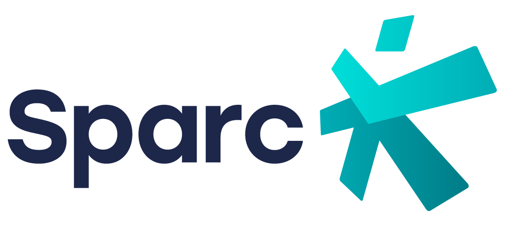

Bridging expertise to policy in personalised cancer medicine
The SPARC Stakeholder Coordination Group (SCG) brings together a selected group of external experts and representatives from different sectors of the cancer care ecosystem, including clinical practice, research, academia, patient organisations, public health, health technology assessment (HTA), policy and industry.
Established through the collaboration between SPARC (Support of Personalised Medicine Approaches in Cancer) and the Joint Action on Personalised Cancer Medicine (JA PCM), the SCG provides a dedicated forum for multidisciplinary exchange, expert reflection and stakeholder input. Its overarching objective is to help translate scientific evidence, practical experience and stakeholder perspectives into meaningful insights and policy-relevant recommendations that can support the implementation of personalised cancer medicine (PCM) across Europe.
By connecting technical expertise with the perspectives of those involved in the development, delivery, assessment and experience of cancer care, the SCG acts as an important interface between project activities and the wider European policy landscape.
The SCG is part of the broader collaboration between SPARC and JA PCM, two complementary EU4Health initiatives.
SPARC supports the integration of personalised approaches into cancer care through clinical implementation activities, evidence generation, capacity building and stakeholder engagement. Its work focuses particularly on advancing the implementation of liquid biopsy and Molecular Tumour Boards (MTBs), strengthening professional competences, addressing inequalities in access to personalised cancer care and translating project findings into policy-relevant insights.
The Joint Action on Personalised Cancer Medicine brings together 29 European countries and 145 partner organisations to advance personalised cancer care across Europe. Its four-year programme aims to establish a sustainable cross-border network that fosters innovation, good practice, equity and collaboration. With an overall budget of €31.6 million
To ensure structured and meaningful stakeholder involvement, SPARC and JA PCM operate through a three-level stakeholder engagement framework. Each level has a distinct function, while contributing to a connected process of strategic alignment, expert dialogue and wider consultation.
The Alignment Group provides strategic coordination at European level. It supports alignment with wider policy developments and helps ensure coherence between the projects’ activities and the broader European personalised cancer medicine landscape.
At the centre of the framework, the SCG serves as a focused, multidisciplinary expert group. It brings together external stakeholders to examine selected priority topics, interpret evidence and practical experience, identify barriers and opportunities, and contribute to the development of policy-relevant messages and recommendations.
The Stakeholder Forum provides a broader platform for engagement, enabling the projects to collect perspectives from a wider range of stakeholders and organisations across the personalised cancer medicine ecosystem.
The SCG is designed as an external expert-driven working group, providing independent perspectives and targeted input to support the activities and expected impact of SPARC and JA PCM.
Bringing multidisciplinary knowledge and experience to selected priority topics in personalised cancer medicine.
Contributing to the assessment and interpretation of evidence, results and practical experiences generated through SPARC and JA PCM activities.
Examining the clinical, organisational, technical, regulatory and health-system factors that influence the implementation of personalised cancer medicine.
Contributing to the formulation and refinement of policy-relevant messages, recommendations and guidance.
Reviewing and providing feedback on relevant project findings, materials and outputs, helping ensure that they reflect the perspectives and needs of different stakeholder groups.
Exploring how lessons and good practices identified through project activities can be adopted, adapted and scaled across different national and regional healthcare contexts.
During its first year, the SCG’s work is centred on selected high-impact topics that are particularly relevant to the implementation of personalised cancer medicine and the activities of SPARC and JA PCM.
Liquid biopsy offers important opportunities for cancer diagnosis, monitoring and treatment decision-making through the analysis of biological material, particularly circulating tumour- derived components, obtained from blood and other body fluids.
Its integration into clinical practice raises a range of scientific, technical, organisational and regulatory considerations. These include the standardisation of pre-analytical and analytical procedures, the validation and interpretation of results, the definition of appropriate clinical applications and the integration of liquid biopsy into existing diagnostic and treatment pathways.
Through its clinical pilots, protocol development and training activities, SPARC is working to advance the practical implementation of liquid biopsy and generate evidence to support its wider use. The SCG provides an opportunity to examine the challenges and opportunities associated with this process from different stakeholder perspectives.
Molecular Tumour Boards bring together multidisciplinary teams of specialists to interpret complex molecular and genomic information and consider its implications for individual patients’ treatment pathways.
Their effective implementation requires appropriate clinical expertise, multidisciplinary collaboration, access to molecular diagnostics, reliable data interpretation and organisational structures that support their integration into healthcare services.
SPARC is working to establish and refine MTBs within its clinical pilots, assess their implementation and identify organisational, technical and other barriers. The SCG can contribute to discussions on good practices, the role of different professional disciplines, patient involvement and the conditions needed to support the effective integration of MTBs into different healthcare systems.
Presentation of the topic, its relevance to SPARC and JA PCM, and the objectives of the discussion.
Overview of relevant findings, activities, challenges or experiences generated through the projects.
Exchange among SCG members, bringing together different perspectives and identifying areas of agreement, disagreement and further exploration.
Consolidation of the main insights, recommendations and potential follow-up actions.
The discussions are synthesised into policy-relevant summaries and key messages. These outputs are intended to inform the relevant activities of SPARC and JA PCM and contribute to their wider policy, communication and dissemination work.
The SCG is jointly coordinated by:
Members are contacted directly by email, with relevant background documents, meeting materials and supporting information shared through the project's communication channels.
Bringing together 5 broad categories: Clinical, HTA, Industry, Patient Orgs, and Public Health.
European Society of Radiology (ESR)
Full Professor of Radiology at Université de Paris and Head of the Radiology Department at Hôpital Cochin (AP-HP), Paris. A specialist in thoracic imaging, lung cancer screening and AI in radiology, she is a past President of the European Society of Thoracic Imaging (ESTI).
European Association of Urology (EAU)
Professor of Urological Surgery and Director of the Academic Urology Unit at the University of Aberdeen. Former Chair of the EAU Guidelines Office Board and currently Secretary General – Education at EAU, his research spans evidence synthesis, large-scale observational studies and guideline implementation, including major European Big Data consortia in prostate cancer.
International Agency for Research on Cancer (IARC/WHO)
Head of the Laboratory Services and Biobank Group at IARC/WHO. He manages one of the world’s largest collections of clinical samples for cancer research and is an expert in biobanking, virology, gene–environment interactions and the implementation of digital health solutions.
EUnetHTA / Brussels Centre for Collaborative Innovation in Health; International Horizon Scanning Initiative (IHSI)
Chief Operating Officer of EUnetHTA and Head of the Secretariat of the EU HTA Regulation Coordination Group (HTAR CG). His work includes EU-wide implementation of joint clinical assessments, oncology medicines and cross-border HTA collaboration and evidence-generation frameworks.
AstraZeneca
Leads global scientific strategy for oncology diagnostics at AstraZeneca, driving biomarker adoption and local testing solutions. Former Director of Molecular Pathology at Atrium Health, he oversees partnerships supporting the expansion of liquid-biopsy NGS access in Europe.
Novartis
Leads global public affairs for Novartis Oncology, focusing on policy strategy and multi- stakeholder engagement across cancer prevention, diagnosis and treatment. Her experience spans oncology access, health-system engagement and partnerships with patient groups, professional societies and policymakers.
Guardant Health
Leads access and policy strategy for precision oncology diagnostics at Guardant Health across Europe and the Americas. He is a Board member of EUCOPE and chairs a pan-European genomics industry coalition advancing access to advanced diagnostics in cancer care.
Digestive Cancers Europe (DiCE)
Renowned gastrointestinal oncology expert and former Division Head of Digestive Oncology at KU Leuven/UZ Leuven. Co-founder and Medical Director of DiCE, she has authored more than 1,600 publications and led major EU trials in colorectal, gastric and pancreatic cancers.
Europa Donna – The European Breast Cancer Coalition
Patient advocate and leader from Cyprus, serving as President of Europa Donna since January 2024. She represents a network of national breast cancer advocacy groups across Europe, promoting awareness, early detection and equitable care.
Lung Cancer Europe (LuCE)
Patient advocate with more than 25 years of senior-level experience in the pharmaceutical industry. Following her own diagnosis with ALK-positive lung cancer, she founded the UK charity ALK Positive Lung Cancer UK in 2018 and now leads LuCE as its President, championing early diagnosis, equitable access to treatment and the patient voice across Europe.
European Public Health Association (EUPHA)
Senior public health researcher and health-system policy expert. President of EUPHA from 2024 to 2026, he has also contributed to the scientific coordination of major EU cancer-policy Joint Actions, including CanCon and iPAAC, focused on national cancer control programmes and governance in Europe.
Association of Schools of Public Health in the European Region (ASPHER)
Epidemiologist specialising in non-communicable diseases and cancer. President of ASPHER, he also leads the WHO Collaborating Centre for NCDs at his institute.